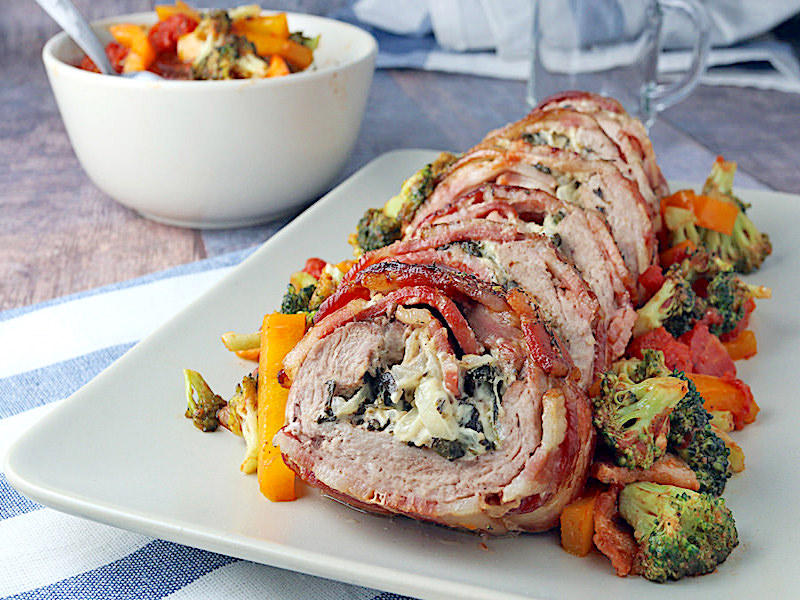

ARROSTO RIPIENO ALLA REGGIANA
SECONDI PIATTI

- Descrizione
- Una ricetta gustosa da preparare per il menù di Natale semplice ed economica: un rotolo di carne con ripieno di frittata, pancetta e spinaci.
- Ingredienti
- - 800 g di fesa di vitello in un'unica fetta
- - 700 g di spinaci
- - 100 g di pancetta a fette
- - 2 uova
- - 80 g di parmigiano reggiano grattugiato
- - 120 gr di burro (ma potete anche fare metà olio extra vergine d'oliva e metà burro)
- - sale e pepe
- Preparazione
- Iniziate preparando una frittatina larga e sottile, con le uova, un po' di Parmigiano Reggiano, sale e pepe. Pulite accuratamente gli spinaci, fateli cuocere in una casseruola con la sola acqua rimasta fra le foglie, quindi scolateli, strizzateli e fateli saltare in padella con un po' di burro, Parmigiano Reggiano e sale. Stendete la fetta di carne su un tagliere e ricopritela con la pancetta affettata, la frittata e infine gli spinaci lasciando un largo bordo libero. Arrotolate la fetta di carne su se stessa, cucitene i lembi con ago e filo e avvolgete il rotolo fermandolo con il filo o una rete.
- Mettete l'arrosto in una casseruola e fatelo rosolare in un fondo di olio e burro uniformemente a calore vivace per 5-6 minuti, finché sia ben colorato, bagnate poi con un bicchiere d'acqua (o di brodo), coprite col coperchio e fate cuocere per circa un'ora avendo cura di aggiungere acqua o brodo se la carne dovesse asciugarsi troppo. Al termine della cottura, togliete la reticella o il filo, tagliate l'arrosto a fette abbastanza spesse e servite cospargendo col fondo di cottura.
Torna alla pagina iniziale
by Bartoli Matteo